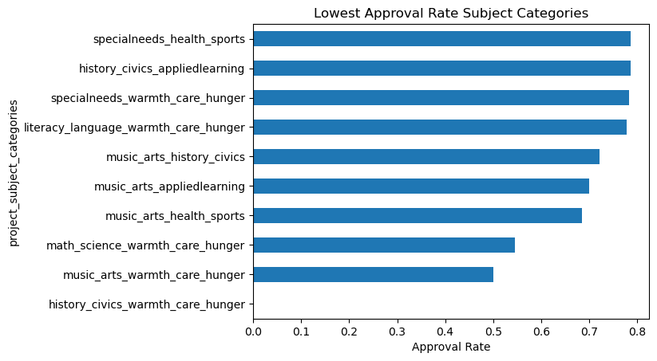
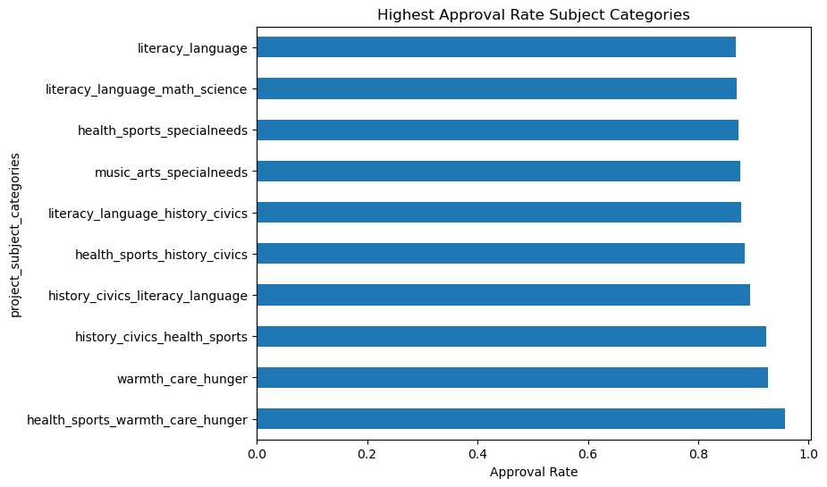
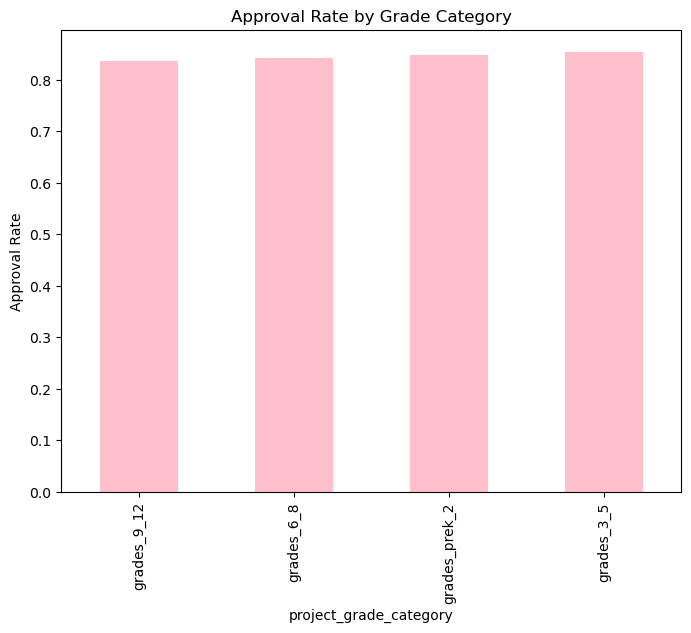
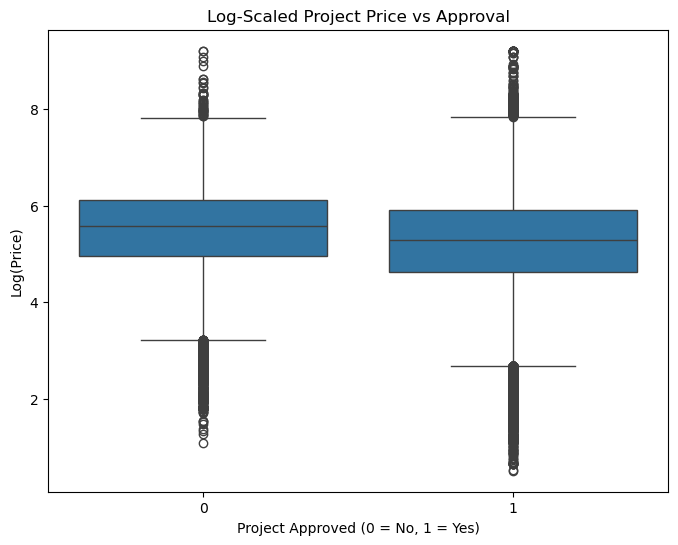
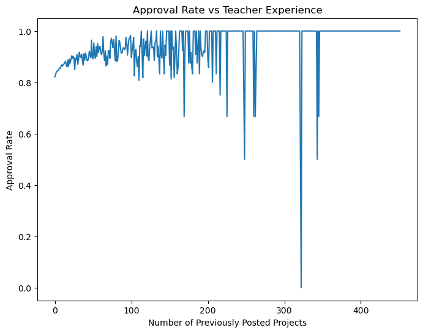

Funding the Gap: Understanding Project Approval on DonorsChoose
Introduction
DonorsChoose is a platform that allows teachers across the United States to request funding for classroom projects.
These projects range from books and stationery to technology and sports equipment.
While most projects are approved, a noticeable fraction are not, raising important questions about fairness, access, and prioritization.
This project aims to uncover which types of projects are more likely to be approved and why.
By analyzing historical project data, we seek to identify patterns that can help improve the funding process and support underserved teachers and schools.
Business Questions
Which types of projects are more likely to get approved?
Do certain subjects or grade levels face disadvantages?
Does project cost influence approval?
Does teacher experience affect the likelihood of success?
Data and Methodology
The dataset contains over 109,000 project records from DonorsChoose, including subject categories, grade levels,
teacher experience, project cost, and approval outcomes.
We performed exploratory data analysis and created visualizations to identify trends and disparities.
This project focuses on descriptive and diagnostic analysis rather than predictive modeling.
No machine learning models were used in this analysis. The goal is to clearly explain patterns and insights in a way that non-technical readers can understand.
How to Read the Visuals
Each chart in this report compares project approval outcomes across different dimensions such as subject, grade level,
cost, and teacher experience. The axes represent approval rates, where higher values indicate better chances of approval.
The overall average approval rate is around 85%. Categories performing significantly below this value deserve closer attention.
Hypotheses
Before analyzing the data, we formulated several hypotheses to guide our exploration:
Projects related to core academic subjects would have higher approval rates.
Projects for younger students would be more likely to receive funding.
Lower-cost projects would be more likely to be approved.
Teachers with more experience on the platform would have higher success rates.
These hypotheses helped structure the analysis and ensured that the findings were driven by clear, testable questions.
Key Findings
Overall Approval Rate
Approximately 85% of projects are approved, while about 15% are rejected. Although the majority of teachers are successful in securing approval,
this remaining fraction represents thousands of projects that do not receive the support they seek.
This suggests that approval is not automatic and depends on several underlying factors such as project type, target grade, and teacher experience.
Understanding why this group struggles is crucial, as it may reveal hidden inequalities in access to educational resources and opportunities.
Performance Across Subject Categories


Approval rates vary widely across subject categories. Some subject combinations perform far below the overall average,
while others consistently succeed, suggesting that not all project types are evaluated or supported equally.
This pattern may reflect donor preferences, perceived urgency of certain needs, or how appealing specific subjects are to contributors.
Such variation highlights the importance of examining whether some educational needs are being systematically overlooked.
Approval by Grade Category

Projects aimed at younger students tend to have slightly higher approval rates compared to those targeting higher grades.
This pattern may indicate a donor preference toward early education, where contributors feel their impact is more foundational.
It also raises questions about whether projects for older students receive sufficient attention despite their equally important needs.
Does Project Cost Matter?

Approved and rejected projects show very similar price distributions, indicating that project cost alone does not strongly determine approval.
This challenges the common assumption that expensive projects are more likely to be rejected.
Instead, it suggests that factors such as project purpose, perceived impact, and presentation quality play a more decisive role in funding decisions.
The Role of Teacher Experience

Projects submitted by experienced teachers are more likely to be approved, highlighting the importance of familiarity with the platform and proposal-writing practices.
This suggests that success is influenced not only by the project itself but also by how effectively it is communicated.
It underscores the need for better support and guidance for first-time or less experienced teachers.
What Surprised Us
One surprising finding was that expensive projects can still be approved at rates similar to cheaper ones,
challenging the common belief that high cost automatically leads to rejection.
This suggests that donors are willing to support high-value projects when they clearly demonstrate impact and necessity,
rather than simply favoring low-cost requests.
Another key insight was the strong influence of teacher experience on approval rates.
This indicates that writing effective proposals, clearly articulating needs, and understanding the platform’s expectations
play a critical role in determining project success, sometimes even more than the nature of the project itself.
Limitations of This Analysis
This analysis does not explicitly model donor behavior, such as individual donor preferences or donation timing,
which could significantly influence project approval outcomes.
While project text was available, the quality, tone, and persuasiveness of proposals were not deeply analyzed,
which may play an important role in approval decisions.
The dataset represents historical records and may not fully reflect recent changes in DonorsChoose policies or user behavior.
External factors such as economic conditions or seasonal trends were not considered in this study.
Recommendations
Introduce structured onboarding and training programs for new teachers:
Since teacher experience strongly influences approval rates, DonorsChoose should provide detailed onboarding materials,
including sample successful proposals, writing tips, and common pitfalls. This would help first-time teachers better
understand platform expectations and improve their chances of success from the beginning.
Develop proposal-writing guides and automated feedback tools:
Creating interactive tools that offer real-time feedback on clarity, completeness, and tone of project descriptions
can significantly improve proposal quality and reduce the disadvantage faced by less experienced contributors.
Provide targeted support for low-performing subject categories:
Subject categories with consistently low approval rates should receive focused attention, such as priority review,
visibility boosts, or special donor campaigns, to ensure that important but underfunded educational needs are not neglected.
Encourage mentorship programs between experienced and new teachers:
Pairing new teachers with experienced ones can help transfer knowledge about effective proposal framing, realistic budgeting,
and donor engagement, fostering a more supportive and collaborative community.
Ensure fairness and transparency in evaluation criteria:
Clear and publicly available evaluation guidelines can help reduce unconscious bias and ensure that projects are judged
based on merit and impact rather than subject popularity alone.
Increase platform visibility for underrepresented project types:
DonorsChoose can introduce features such as “Projects Needing Attention” or rotating spotlight sections to draw donor
interest toward projects that historically receive less support but address critical educational gaps.
Use data-driven monitoring to continuously assess equity:
Regular audits of approval rates across subjects, regions, and grade levels can help detect emerging disparities early
and allow timely corrective actions through policy updates, teacher training, and platform improvements.
Implications for Donors
For donors, these findings suggest that their collective preferences significantly shape which types of educational needs are met.
Becoming aware of underfunded subjects and disadvantaged project types allows donors to make more balanced and impactful choices.
Encouraging donors to explore a wider range of projects may help reduce inequalities and ensure that critical but less visible needs are addressed.
Next Experiments
Analyze sentiment and clarity of essays in relation to approval.
Study time-to-approval for different project categories.
Explore district-level inequalities in funding.
Build predictive models for approval probability.
Conclusion
This project demonstrates that project approval on DonorsChoose is influenced far more by subject type and teacher experience than by project cost alone.
While financial considerations matter, they do not appear to be the primary barrier for approval.
Instead, how a project is framed, the nature of the educational need, and the familiarity of teachers with the platform play a more decisive role.
By uncovering these patterns, this analysis highlights opportunities to improve fairness, increase transparency, and better support teachers who are new or working in underrepresented subject areas.
Ultimately, using data to guide such improvements can help DonorsChoose become a more equitable and effective platform for advancing educational opportunities.
Why This Matters
Education funding plays a crucial role in shaping the quality of learning opportunities available to students.
When certain projects or schools consistently struggle to receive support, it can widen existing educational inequalities.
By using data to highlight such disparities, platforms like DonorsChoose can make more informed, transparent, and equitable decisions.
Beyond this platform, the approach demonstrated in this project shows how data storytelling can be used to drive meaningful social impact,
ensuring that limited resources are allocated in ways that truly benefit those who need them most.